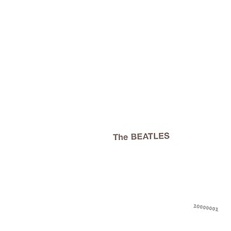

The Beatles - Worst to Best
posted 28/04/21
Ahh The Beatles, one of the, if not the most famous band of all time. There’s no way this list is going to be controversial! There’s no need to go through the history of this band, everyone knows George, Paul, John, and Ringo, so let’s get into the list.

11. With the Beatles - 5/10
This shouldn’t be too much of a surprise (hopefully), but this is, in my opinion, the worst Beatles album. The first half of the Beatles career is typically looked down upon, as it’s easy to see why when comparing an album like With The Beatles to their later works. There isn’t a whole lot to say about this album, it’s generally unremarkable and mediocre, with some flashes of greatness that are dragged down by very meh covers.

10. Please Please Me- 5/10
The iconic Beatles debut, with Love Me Do and 12 other songs! This is slightly better than With The Beatles because it’s not dragged down by the covers, but generally suffers from the same mediocrity that With The Beatles does. Not bad by any means, but very far from what the Beatles would later achieve.

9. Beatles for Sale - 5/10
This album has its moments, mainly “No Reply”, which is pretty fantastic, and is a sign of things to come for the band. If it were more consistent, I would place this album higher up in this list, but it’s unfortunately bogged down by most of its covers. Flashes of brilliance here and there, but too inconsistent and unremarkable throughout most of the tracks to command any higher praise.
8. Magical Mystery Tour - 5/10
I can already hear everyone picking up their pitchforks and storming down my door. Sorry, but I think this album is really overrated, and kind of a mess. (I should warn you all now, this isn’t even my hottest Beatles take). “I Am The Walrus” is brilliant and “Strawberry Fields Forever” is a great addition to Lennon’s catalogue. Everything else here is either really clunky and weird (see “Magical Mystery Tour”, I cannot stand the vocal performance here) or just painfully boring and unimaginative (see the very overrated “Hello Goodbye”). The pacing of this album is also not great, which only makes things that much worse. Where an album like Revolver could get away with simple and/or weird songs every now and then, the pace of this album just makes all of these moments stick out like sore thumbs. Lastly, this is one of the ugliest album covers I’ve ever seen, and pretty much represents how dated this album sounds in 2020. Save “I Am The Walrus” and “Strawberry Fields Forever”, dump the rest.

7. A Hard Day's Night - 6/10
Slightly overrated, but still filled with great moments and wonderful melodies with great album pacing. Despite how simple a lot of the tracks are, especially lyrically, a lot of this just works and really stays stuck in your ears. There’s nothing really impressive here, but nothing bogging it down either; this is just a really fun pop rock album.

6. Help! - 7/10
A lot of the sentiments from A Hard Day’s Night echo here, this is a really fun and catchy pop rock album. The two obvious standout moments are among fan favorites: Help! And Yesterday. These tracks, among other moments across the album, really show signs of what’s to come next on Rubber Soul. Help! is slightly more focused and personal than all of the albums that came before it, looking at the loneliness and yearning for love that all of the Beatles likely experienced throughout their lives.

5. Sgt. Pepper's Lonely Hearts Club Band - 7/10
And here it is, what I consider to be my hottest Beatles take, and quite honestly my hottest take of all time. It’s not so much because of the ranking I say this, but the score. “One of the greatest albums of all time, the Beatles’ intricate masterpiece, the first concept album ever!” Yeah, this album is really overrated. There are a few key tracks that I want to discuss first, to make my opinion of this album clearer.
First, the title track, which is easily the best track on the album. The setup of the fictional concert with the fiction Sgt. Pepper’s Lonely Hearts Club Band is wonderful, and the vocal performance and instrumentation are so raw and viscerally powerful. I love this track, and its associated reprise later in the album, but that’s about it.
Next, “Within You Without You”. This song is cool, and showcases George Harrison’s talents fairly well. But it’s certainly not one of his best tracks, and another example of how overrated a lot of this album is. Lyrically, a lot of the content here is great, showcasing George’s introspection well, but the accompanying music is just not all that exciting. The song wears its “Ravi Shankar influence” on it’s sleeve, without really doing anything innovative or interesting with it (by contrast, see “Love You To”). As a result, I can’t help but feel the song sounds incredibly dated in 2020, though this isn’t as bad as some other moments here. (I guess I’m not Indian enough; while I appreciate classical Indian music such as that of Ravi Shankar, I think it sounds incredibly dated and old today)
Next, “A Day In The Life”. Much of this song is pretty great, but the degree to which it’s overhyped is ridiculous. I’m specifically referring to the “iconic moment” on this song, where the huge orchestra ascend from the lowest note to the highest note on their instruments. It really serves no purpose in this song, and in this album, except to make the entire experience seem grandiose and larger than life, and I guess to have something cool to put on the cover. This point segues nicely into what I think of the concept of this album.
The “concept” of this album is so loosely defined, and not really stuck to at all over the course of this album. The first couple of songs stick to this concept nicely, really emphasizing the name of the fictional band, Sgt. Pepper’s LONELY HEARTS Club Band, but the rest of the album deviates from this entirely. The rest of the album is just an assortment of Beatles songs disguised as “Sgt. Pepper’s Lonely Hearts Club Band” songs. It only hurts that this isn’t their best material, and much of it sounds dated. Let’s get to the worst offender.
Much of what I’ve said thus far hasn’t been terribly negative, and mostly comes down to the sound and loose concept of the album not working for me. I could admit I’m just being a contrarian hater, give this an 8 or 9 and move on, but there’s one reason I can’t. Ok, torches ready? “Lucy in the Sky with Diamonds” is one of the worst Beatles songs. Ever. The vocal performance here is awful, the pacing of the song is erratic and clunky, and the instrumental sounds super, super dated. Nothing about this song works, and I don’t think it’s an incredibly interesting depiction of psychedelic use, especially when compared to a standout moment from Revolver like “Tomorrow Never Knows”, or even the quirky and fun “Yellow Submarine”. This song really brings down the rest of what’s to come on the album, and the stellar title track isn’t enough to save it.

4. Rubber Soul - 8/10
Rubber Soul is a lot more similar to previous albums like Help! and A Hard Day’s Night than people make it out to be, and the gap isn’t that huge. That being said, the gap is certainly noticeable. This album saw more experimentation implemented in the Beatles’ sound, and a shift from love songs to more varied topics and introspective lyrics. There are still some signs of the old Beatles here, mainly the song “The Word”, which is probably the simplest song here. But even though this isn’t quite as adventurous and experimental as later albums, a lot of this works really well, helped by the wonderful album pacing.
That’s not to say there aren’t standout moments here, the main one I want to highlight is “Norwegian Wood (This Bird Has Flown)”. This song is stellar, the instrumentation here is absolutely incredible and adds a ton of charm to a song with beautifully absurd lyrics. The first part shows the Beatles building on what works so well for them, with wonderful lyrics detailing the very one-sided relationship this man finds himself in. And then, subverting every expectation I had, he just burns the house down. Absolutely splendid.
This album is really greater than the sum of its parts, and it showcases such wonderful camaraderie amongst all of the Beatles. While still wearing some of the old Beatles’ boy band habits on their sleeve, this album is a step above their old work, and is one of their better albums.

3. Abbey Road - 9/10
I debated putting this second, because of the sheer number of hits on this album, but I ultimately couldn’t do it for a couple of reasons. Before I get to those, let’s discuss all of the amazing things about this album.
“Come Together” is one of the best Beatles songs, period. With that iconic intro, it’s such a great opener for the album, and based on Beatles’ interviews, seems like one of the last unified efforts from the Beatles to create a stellar track. I couldn’t imagine a better way to kick off the album.
“Something” is a wonderful effort from George, one of his best tracks. It’s the Beatles doing typical Beatles things, but in perhaps the most lyrically refined ways possible. Love the vocal performance, love the instrumentation here, love this track so much.
“I Want You (She’s So Heavy)” captures what I love so much about this album: the beautifully organized chaos and band clearly falling apart over conflicting interests. This really represents the overall concept of this album wonderfully; the Beatles could have just given up after the tense Let It Be sessions, but came together for one final hurrah, and it captured every band member wonderfully. The vocal performance here is spectacular, and I cannot get enough of the 3-minute long coda; this track is also one of the best Beatles songs, period.
“You Never Give Me Your Money”. Another one of the Beatles’ best tracks, I love the way this song details the struggles the band were going through with the music industry, looking at their financial issues and disagreements on contracts and management of the band. A very bittersweet, sobering song bringing the erasing the mystique of the Beatles and signaling the end. Wonderful pacing, awesome instrumental break, one of my all time favorites.
The medley in the second half is really fun, and I love its addition on the album. To me, it’s always vividly illustrated how fractured the band had become, only able to create one album side full together before devolving to throwing little snippets onto the second side.
“The End”. What a great way to end it all; each of the guitar solos here are among their best, and they close the album beautifully. (Well “close the album”, since “Her Majesty” exists. Telling how they couldn’t even end the album properly)
I have to spoil #2 right now, in order to explain why I have this at #3. When comparing this to The White Album, there are two main reasons I have Abbey Road placed lower (if only slightly):
“Sun King”. For all the talk about the filler on White Album (which I’ll get to in a bit), none of those are as egregious as “Sun King”, which is just plain boring and unnecessary. It certainly doesn’t help with the pacing of the album, which is my next point.
Despite how well-structured and planned out Abbey Road is, the pacing isn’t great throughout the bulk of the album. The first half just plays like a greatest hits compilation; while the tracks here are great, some of them at the top of the Beatles’ entire discography, they feel disjointed and separate from each other. Here’s the George love song, now here’s Paul’s two tracks, then Ringo’s cut, and so on. The pacing only gets worse in the second half, which just feels like a mess of ideas that the Beatles couldn’t fit into the first half. Some of these ideas are great, but they can feel out of place unfortunately. The medley is paced well, but just starts out of nowhere, and before you know it, the album is over and the Beatles’ career is finished.

2. The Beatles - 9/10
This album depicts the same struggles the band was going through during their later years and the lack of camaraderie amongst the members is evident here. But the White Album takes the complete opposite approach in showing this struggle. Where Abbey Road is very purposeful and intentional in the way these struggles are presented, The Beatles is a mish mash of everyone’s ideas in the most chaotic way possible, with the most understated cover. (And my favorite Beatles cover). For this reason, comparing Abbey Road and The Beatles is incredibly difficult for me, I could easily see these switching positions depending on which approach appeals more to the listener. But ultimately, I chose The Beatles, while it isn’t laden with hits like Abbey Road, the flow between each of the tracks somehow works perfectly, and I find the unorganized chaos here works better than the meticulously crafted Abbey Road.
For all the talk of filler on this album, I think every track here (minus “Ob-La-Di, Ob-La-Da”) is great within the album. Sure, a song like “Birthday” on its own is inessential filler, but what it contributes to the pacing and overall album experience is invaluable. And while a song like “Revolution 9” may just be weird Lennon experiments for some, it makes a statement within the context of the album, no one is holding back here. This is 90 minutes of The Beatles, no holding back.
There are some killer tracks here I’ll go through very very briefly:
“Back In The USSR”: I don’t care if this is meant to be a parody, Paul makes me want to move back to the USSR
“Glass Onion”: I love how Lennon’s distaste for over analysis shines through, here, awesome track
“Wild Honey Pie”: Super underrated track, I love how quirky and out of left field this is. Just the right length, this adds a nice little twist to add to the chaos of everything going on here, without overstaying its welcome
“While My Guitar Gently Weeps”: George’s best track, and one of the Beatles’ best songs ever
“Blackbird”: A fan favorite, for good reason, one of Paul’s best tracks ever
“Yer Blues”: Love the instrumentation here, as well as the blunt, depressing lyrics. Love the vocal performance. I can’t get enough of Lennon wailing “wanna die!” (That’s an unfortunate sentence, I just mean in terms of the vocal delivery)
“Sexy Sadie”: Love this track. It’s definitely a great song on it’s own, but I love it even more for how it flows into the next track
“Helter Skelter”: Do I need to say anything here, this is also among the Beatles’ best tracks ever. I seriously could not believe Paul created this when I heard this; this is probably the greatest thing he’s ever done
“Revolution 1”: Iconic. Whether or not I 100% agree with the politics here doesn’t matter, this song is just so iconic and representative of who the Beatles were. I love the lyrics and love the laid-back attitude this song presents.
“Savoy Truffle”: Maybe an unexpected track to see here, I just love the weird vocal performance and instrumentation on this one.
And that’s just the songs I think are brilliant; there are plenty more that showcase even more of the Beatles’ variety and add to the beautiful chaos. The experience of the White Album is unparalleled, yet it’s not quite the Beatles’ best. And so, you know what’s next.

1. Let It Be - 9/10
And now for the Beatles’ greatest album, Let It Be. Let It Be was released as their last album, but was recorded before Abbey Road, and perfectly balances the,
Okay I can’t do this anymore, and I’m sure this joke won’t even work well over text. I haven’t even listened to Let It Be, and I don’t know when I will.
So the real #1 is ... Revolver, duh.

This album is the Beatles’ at their best and most unified, not trying too hard to force a concept but focusing on the introspection and innovation that made Rubber Soul a hit, and dialing it up a notch. Again, like Rubber Soul, and even The Beatles, this album has a captivating flow to it, and is much more than the sum of its parts. This is especially because of the camaraderie and unity of the band on display here, everyone seems like they’re on the same page in their individual tracks, and it makes for a really cohesive album. I would argue this is the Beatles’ most conceptually focused and thematically cohesive album by far, but not by design. This is just the Beatles’ exploring the world around them, thematically and sonically, and describing the influence of drugs, mainly psychedelics, on this experience. The concept here is simply the Beatles finding a way to make sense of the world around them and express this, and ultimately psychedelics represent the approach they took. I’ll dive further into this when discussing “Tomorrow Never Knows”, but before that, let’s discuss all of the incredible tracks that come before it:
“Taxman”: Despite the praise I heaped on “Come Together” earlier, it doesn’t quite match “Taxman” as an album opener. “Taxman” gets things rolling quickly, with an unexpected departure from love songs to taxation and politics, backed by incredible instrumentation. Easily one of the best Beatles’ songs ever.
“Elanor Rigby”: I really shouldn’t have to back up this opinion, but this is the Beatles’ second best song. I can really only think of one song I find better (it’s coming), but this song quickly turns Paul’s wailing guitar from "Taxman" into incredibly somber strings with incredibly somber lyrics, perfectly capturing the inquisitive nature of Beatles as they discover the lonely, depressing world around them.
“I’m Only Sleeping”: A great, underrated cut that looks at the idea of pace and laziness. In such a hectic, fast-paced world, it’s an incredibly relatable feeling, to just want to take things at our own pace and discover the world on our own terms. I can’t imagine how much being in the biggest band in the world exacerbated that feeling of constantly being rushed for results.
“Love You To”: Another contender for one of George’s best songs, this perfectly makes use of the sitar while still maintaining the pace and energy of the rest of the songs on the album. Here, George is expressing his love for love, as the Beatles have done time and time again. But “Love You To” sees an incredibly mature approach with introspective lyrics looking at the fleeting nature of life; the sentiment of “love is the greatest thing” no longer seems so naive, but instead necessary to cope with the world around us
“Here, There, and Everywhere”: The melody here is brilliant, and the pursuit for love is again explored very introspectively; Paul recognizes how strongly he desires his love to be everywhere, and it’s clear how important love is to cope with the world and achieve happiness. When coupled with the previous tracks, it’s very clear how disillusioned the Beatles seem with the world around them.
“For No One”: After the pleasant detour the middle of this album takes, “For No One” kicks things right back into gear. The bliss that was attained in previous tracks is shattered, now that love has been taken away, and we quickly see the struggles of living in the world independently
“Doctor Robert”: Seen by many as a throwaway track, I think “Doctor Robert” is interestingly placed, and makes powerful statements on the place of medicine in attaining happiness. (Or maybe it was meant as filler and I’m projecting my own thoughts onto the song, oh well). By this point in the album, the Beatles are struggling to live in the world they find themselves in and express these struggles, so they turn to Doctor Robert, who claims to have all of the solutions in his cup. 50 years later, and prescription medicine is more widespread than ever, and is used as the primary method of addressing mental health issues. So how did the Beatles end up figuring things out?
“I Want To Tell You”: This is where the Beatles’ struggle to express themselves is made evident. This is yet another incredible George track (he’s perfect on this album), beautifully capturing how the Beatles’ heads are brimming with ideas, but no way to express them and fully understand them.
“Got To Get You Into My Life”: Paul professes his love for weed, and I’m absolutely here for it. The vocal performance here is great, the horns here are great, and this is just such a fun track, capturing the Beatles finally finding the inspiration needed to address the issues presented earlier.
“Tomorrow Never Knows”: And here it is. This is the best Beatles song ever, and I’m taking that to my grave. The psychedelic instrumentation here is absolutely mind-blowing, and still sounds incredibly fresh 50 years later. Lennon here perfectly captures the takeaways from their experiences with drugs: living life in the moment, being mindful of that moment, and emphasizing love above all else.